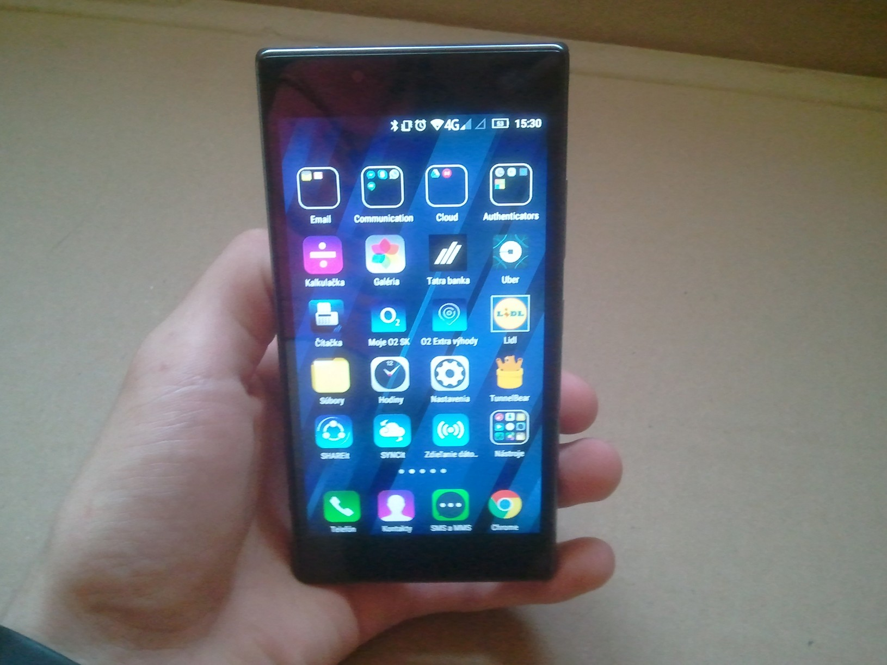

    <main>
        

        <article class="displej_text">
            <p>Displej bez zbytočných pixelov</p>
            <p>Pri pohľade na cenu testovaného zariadenia, ktoré sa v slovenských e-shopoch predáva približne okolo 240 eur, bolo od začiatku jasné, že Lenovo muselo niekde šetriť. Prvou obeťou redukcie nákladov bol displej, no v tomto prípade sa však šetrilo na tom správnom mieste.</p>
                
                <video class="displej" width="560" height="315" controls muted>
                    <source src="vid/displej_video_mp4_360p.mp4" type="video/mp4">
                    <source src="vid/displej_video_webm_360p.webm" type="video/webm">
                    Your browser does not support HTML5 video!
                </video>
                
            <p>Preteky za čo najvyššou hustotou zobrazovacích bodov obchádzajú Lenovo P70 širokým oblúkom. Použitý panel má rozlíšenie 720 × 1280 pixelov, čo pri piatich palcoch uhlopriečky predstavuje hustotu pixelov na úrovni 294 ppi. Táto hodnota je ďaleko za súčasnou špičkou, vo väčšine prípadov je však úplne postačujúca. Písmo či drobné detaily obsahujú jemné „zrno“, ktoré ale celkové používanie nijak zásadne nedegraduje. Navyše je nižšie rozlíšenie šetrnejšie k batérii.
            </p>
            
            

            <p>Čo displej stráca v oblasti počtu pixelov hravo doháňa v ďalších dôležitých aspektoch. Lenovo vybavilo model P70 IPS panelom. Má verné podanie farieb bez zbytočnej saturácie a široké pozorovacie uhly. K deformáciám zobrazovaného obsahu nedochádza ani pri extrémnych náklonoch. Pri zobrazovaní čiernej podáva použitý panel takisto výborné výkony, avšak konkurencii v podobe AMOLED displejov nestačí, keďže tmavé pixely len tieni a nie priamo zhasína.
            </p>
            
            
            
            <p>Nad displejom nájdeme aj užitočnú notifikačnú diódu, ktorá svojím vytrvalým blikaním spoľahlivo získa pozornosť používateľa pri novej správe či zmeškanom hovore.
            </p>
                <a class="ext_link" target="_blank" href="http://shop.lenovo.com/sk/sk/smartphones/p-series/p70/">Prejsť na stránku výrobcu</a>
            
            
            
            

            <p>Problémom nie sú ani odlesky či prílišné zachytávanie odtlačkov prstov. Vďaka značkovému kryciemu sklíčku Gorilla Glass 3 sa nemusíme obávať ani o odolnosť voči škrabancom. Výrobca však v tomto prípade nenechal nič na náhodu a do balenia prihodil aj ochrannú fóliu.
            </p>
            
            
        </article>
    </main>        
